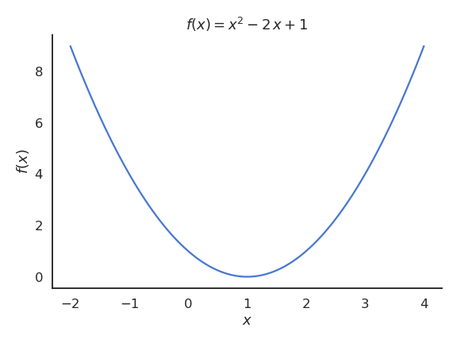
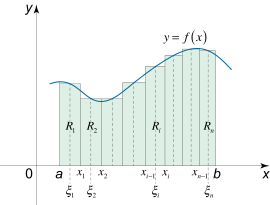
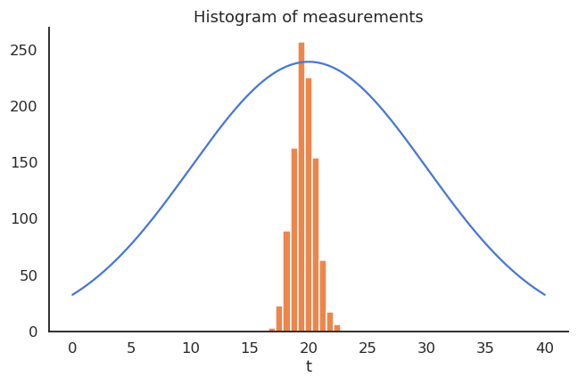

Outline
Linear algebra
Calculus
Probability theory
Statistics
Information theory
Mathematical objects
Scalars \(x\) are 0-dimensional values. They can either take real values (\(x \in \Re\), e.g. \(x = 1.4573\), floats in CS) or natural values (\(x \in \mathbb{N}\), e.g. \(x = 3\), integers in CS).
Vectors \(\mathbf{x}\) are 1-dimensional arrays of length \(d\).
The bold notation \(\mathbf{x}\) will be used in this course, but you may also be accustomed to the arrow notation \(\overrightarrow{x}\) used on the blackboard. When using real numbers, the vector space with \(d\) dimensions is noted \(\Re^d\), so we can note \(\mathbf{x} \in \Re^d\).
Vectors are typically represented vertically to outline their \(d\) elements \(x_1, x_2, \ldots, x_d\):
\[\mathbf{x} = \begin{bmatrix} x_1 \\ x_2 \\ \vdots \\ x_d \end{bmatrix}\]
Mathematical objects
Matrices \(A\) are 2-dimensional arrays of size (or shape) \(m \times n\) (\(m\) rows, \(n\) columns, \(A \in \Re^{m \times n}\)).
They are represented by a capital letter to distinguish them from scalars (classically also in bold \(\mathbf{A}\) but not here). The element \(a_{ij}\) of a matrix \(A\) is the element on the \(i\)-th row and \(j\)-th column.
\[A = \begin{bmatrix}
a_{11} & a_{12} & \cdots & a_{1n} \\
a_{21} & a_{22} & \cdots & a_{2n} \\
\vdots & \vdots & \ddots & \vdots \\
a_{m1} & a_{m2} & \cdots & a_{mn} \\
\end{bmatrix}\]
- Tensors \(\mathcal{A}\) are arrays with more than two dimensions. We will not really do math on these objects, but they are useful internally (hence the name of the
tensorflow library).
Vectors
A vector can be thought of as the coordinates of a point in an Euclidean space (such the 2D space), relative to the origin.
A vector space relies on two fundamental operations, which are that:
\[\mathbf{x} + \mathbf{y} = \begin{bmatrix} x_1 \\ x_2 \\ \vdots \\ x_d \end{bmatrix} + \begin{bmatrix} y_1 \\ y_2 \\ \vdots \\ y_d \end{bmatrix} = \begin{bmatrix} x_1 + y_1 \\ x_2 + y_2 \\ \vdots \\ x_d + y_d \end{bmatrix}\]
- Vectors can be multiplied by a scalar:
\[a \, \mathbf{x} = a \, \begin{bmatrix} x_1 \\ x_2 \\ \vdots \\ x_d \end{bmatrix} = \begin{bmatrix} a \, x_1 \\ a \, x_2 \\ \vdots \\ a \, x_d \end{bmatrix}\]
Properties of vector spaces
These two operations generate a lot of nice properties (see https://en.wikipedia.org/wiki/Vector_space for a full list), including:
\[\mathbf{x} + (\mathbf{y} + \mathbf{z}) = (\mathbf{x} + \mathbf{y}) + \mathbf{z}\]
\[\mathbf{x} + \mathbf{y} = \mathbf{y} + \mathbf{x}\]
- the existence of a zero vector
\[\mathbf{x} + \mathbf{0} = \mathbf{x}\]
\[\mathbf{x} + (-\mathbf{x}) = \mathbf{0}\]
\[a \, (\mathbf{x} + \mathbf{y}) = a \, \mathbf{x} + a \, \mathbf{y}\]
Norm of a vector
- Vectors have a norm (or length) \(||\mathbf{x}||\). The most intuitive one (if you know the Pythagoras theorem) is the Euclidean norm or \(L^2\)-norm, which sums the square of each element:
\[||\mathbf{x}||_2 = \sqrt{x_1^2 + x_2^2 + \ldots + x_d^2}\]
- Other norms exist, distinguished by the subscript. The \(L^1\)-norm (also called the Manhattan norm) sums the absolute value of each element:
\[||\mathbf{x}||_1 = |x_1| + |x_2| + \ldots + |x_d|\]
- The p-norm generalizes the Euclidean norm to other powers \(p\):
\[||\mathbf{x}||_p = (|x_1|^p + |x_2|^p + \ldots + |x_d|^p)^{\frac{1}{p}}\]
- The infinity norm (or maximum norm) \(L^\infty\) returns the maximum element of the vector:
\[||\mathbf{x}||_\infty = \max(|x_1|, |x_2|, \ldots, |x_d|)\]
Dot product
- One important operation for vectors is the dot product (also called scalar product or inner product) between two vectors:
\[\langle \mathbf{x} \cdot \mathbf{y} \rangle = \langle \begin{bmatrix} x_1 \\ x_2 \\ \vdots \\ x_d \end{bmatrix} \cdot \begin{bmatrix} y_1 \\ y_2 \\ \vdots \\ y_d \end{bmatrix} \rangle = x_1 \, y_1 + x_2 \, y_2 + \ldots + x_d \, y_d\]
The dot product basically sums one by one the product of the elements of each vector. The angular brackets are sometimes omitted (\(\mathbf{x} \cdot \mathbf{y}\)) but we will use them in this course for clarity.
One can notice immediately that the dot product is symmetric:
\[\langle \mathbf{x} \cdot \mathbf{y} \rangle = \langle \mathbf{y} \cdot \mathbf{x} \rangle\]
and linear:
\[\langle (a \, \mathbf{x} + b\, \mathbf{y}) \cdot \mathbf{z} \rangle = a\, \langle \mathbf{x} \cdot \mathbf{z} \rangle + b \, \langle \mathbf{y} \cdot \mathbf{z} \rangle\]
Dot product
- The dot product is an indirect measurement of the angle \(\theta\) between two vectors:
\[\langle \mathbf{x} \cdot \mathbf{y} \rangle = ||\mathbf{x}||_2 \, ||\mathbf{y}||_2 \, \cos(\theta)\]
If you normalize the two vectors by dividing them by their norm (which is a scalar), we indeed have the cosine of the angle between them
The higher the normalized dot product, the more the two vectors point towards the same direction (cosine distance between two vectors).
\[\langle \displaystyle\frac{\mathbf{x}}{||\mathbf{x}||_2} \cdot \frac{\mathbf{y}}{||\mathbf{y}||_2} \rangle = \cos(\theta)\]
Matrices
- Matrices are derived from vectors, so most of the previous properties will be true. Let’s consider this 4x3 matrix:
\[A = \begin{bmatrix}
a_{11} & a_{12} & a_{13} \\
a_{21} & a_{22} & a_{23} \\
a_{31} & a_{32} & a_{33} \\
a_{41} & a_{42} & a_{43} \\
\end{bmatrix}\]
- Each column of the matrix is a vector with 4 elements:
\[\mathbf{a}_1 = \begin{bmatrix}
a_{11} \\
a_{21} \\
a_{31} \\
a_{41} \\
\end{bmatrix} \qquad
\mathbf{a}_2 = \begin{bmatrix}
a_{12} \\
a_{22} \\
a_{32} \\
a_{42} \\
\end{bmatrix} \qquad
\mathbf{a}_3 = \begin{bmatrix}
a_{13} \\
a_{23} \\
a_{33} \\
a_{43} \\
\end{bmatrix} \qquad
\]
- A \(m \times n\) matrix is therefore a collection of \(n\) vectors of size \(m\) put side by side column-wise:
\[A = \begin{bmatrix}
\mathbf{a}_1 & \mathbf{a}_2 & \mathbf{a}_3\\
\end{bmatrix}\]
Properties of matrix spaces
- All properties of the vector spaces (associativity, commutativity, distributivity) also apply to matrices, as additions and multiplications with a scalar are defined.
\[\alpha \, A + \beta \, B = \begin{bmatrix}
\alpha\, a_{11} + \beta \, b_{11} & \alpha\, a_{12} + \beta \, b_{12} & \alpha\, a_{13} + \beta \, b_{13} \\
\alpha\, a_{21} + \beta \, b_{21} & \alpha\, a_{22} + \beta \, b_{22} & \alpha\, a_{23} + \beta \, b_{23} \\
\alpha\, a_{31} + \beta \, b_{31} & \alpha\, a_{32} + \beta \, b_{32} & \alpha\, a_{33} + \beta \, b_{33} \\
\alpha\, a_{41} + \beta \, b_{41} & \alpha\, a_{42} + \beta \, b_{42} & \alpha\, a_{43} + \beta \, b_{43} \\
\end{bmatrix}\]
Note: Beware, you can only add matrices of the same dimensions \(m\times n\). You cannot add a \(2\times 3\) matrix to a \(5 \times 4\) one.
Transposition
- The transpose \(A^T\) of a \(m \times n\) matrix \(A\) is a \(n \times m\) matrix, where the row and column indices are swapped:
\[A = \begin{bmatrix}
a_{11} & a_{12} & \cdots & a_{1n} \\
a_{21} & a_{22} & \cdots & a_{2n} \\
\vdots & \vdots & \ddots & \vdots \\
a_{m1} & a_{m2} & \cdots & a_{mn} \\
\end{bmatrix}, \qquad
A^T = \begin{bmatrix}
a_{11} & a_{21} & \cdots & a_{m1} \\
a_{12} & a_{22} & \cdots & a_{m2} \\
\vdots & \vdots & \ddots & \vdots \\
a_{1n} & a_{2n} & \cdots & a_{mn} \\
\end{bmatrix}
\]
- This is also true for vectors, which become horizontal after transposition:
\[\mathbf{x} = \begin{bmatrix} x_1 \\ x_2 \\ \vdots \\ x_d \end{bmatrix}, \qquad
\mathbf{x}^T = \begin{bmatrix} x_1 & x_2 & \ldots & x_d \end{bmatrix}
\]
Matrix multiplication
- If \(A\) is a \(m\times n\) matrix and \(B\) a \(n \times p\) matrix:
\[
A=\begin{bmatrix}
a_{11} & a_{12} & \cdots & a_{1n} \\
a_{21} & a_{22} & \cdots & a_{2n} \\
\vdots & \vdots & \ddots & \vdots \\
a_{m1} & a_{m2} & \cdots & a_{mn} \\
\end{bmatrix},\quad
B=\begin{bmatrix}
b_{11} & b_{12} & \cdots & b_{1p} \\
b_{21} & b_{22} & \cdots & b_{2p} \\
\vdots & \vdots & \ddots & \vdots \\
b_{n1} & b_{n2} & \cdots & b_{np} \\
\end{bmatrix}
\]
we can multiply them to obtain a \(m \times p\) matrix:
\[
C = A \times B =\begin{bmatrix}
c_{11} & c_{12} & \cdots & c_{1p} \\
c_{21} & c_{22} & \cdots & c_{2p} \\
\vdots & \vdots & \ddots & \vdots \\
c_{m1} & c_{m2} & \cdots & c_{mp} \\
\end{bmatrix}
\]
where each element \(c_{ij}\) is the dot product of the \(i\)th row of \(A\) and \(j\)th column of \(B\):
\[c_{ij} = \langle A_{i, :} \cdot B_{:, j} \rangle = a_{i1}b_{1j} + a_{i2}b_{2j} +\cdots + a_{in}b_{nj}= \sum_{k=1}^n a_{ik}b_{kj}\]
Note: \(n\), the number of columns of \(A\) and rows of \(B\), must be the same!
Matrix-vector multiplication
- Thinking of vectors as \(n \times 1\) matrices, we can multiply a matrix \(m \times n\) with a vector:
\[
\mathbf{y} = A \times \mathbf{x} = \begin{bmatrix}
a_{11} & a_{12} & \cdots & a_{1n} \\
a_{21} & a_{22} & \cdots & a_{2n} \\
\vdots & \vdots & \ddots & \vdots \\
a_{m1} & a_{m2} & \cdots & a_{mn} \\
\end{bmatrix} \times \begin{bmatrix} x_1 \\ x_2 \\ \vdots \\ x_n \end{bmatrix} = \begin{bmatrix} y_1 \\ y_2 \\ \vdots \\ y_m \end{bmatrix}
\]
The result \(\mathbf{y}\) is a vector of size \(m\).
In that sense, a matrix \(A\) can transform a vector of size \(n\) into a vector of size \(m\):
- \(A\) represents a projection from \(\Re^n\) to \(\Re^m\).
Dot product
- Note that the dot product between two vectors of size \(n\) is the matrix multiplication between the transpose of the first vector and the second one:
\[\mathbf{x}^T \times \mathbf{y} = \begin{bmatrix} x_1 & x_2 & \ldots & x_n \end{bmatrix} \times \begin{bmatrix} y_1 \\ y_2 \\ \vdots \\ y_n \end{bmatrix} = x_1 \, y_1 + x_2 \, y_2 + \ldots + x_n \, y_n = \langle \mathbf{x} \cdot \mathbf{y} \rangle\]
Matrix inversion
\[A \times A^{-1} = A^{-1} \times A = I\]
where \(I\) is the identity matrix (a matrix with ones on the diagonal and 0 otherwise).
- Matrix inversion allows to solve linear systems of equations. Given the problem:
\[
\begin{cases}
a_{11} \, x_1 + a_{12} \, x_2 + \ldots + a_{1n} \, x_n = b_1 \\
a_{21} \, x_1 + a_{22} \, x_2 + \ldots + a_{2n} \, x_n = b_2 \\
\ldots \\
a_{n1} \, x_1 + a_{n2} \, x_2 + \ldots + a_{nn} \, x_n = b_n \\
\end{cases}
\]
which is equivalent to:
\[A \times \mathbf{x} = \mathbf{b}\]
- We can multiply both sides to the left with \(A^{-1}\) (if it exists) and obtain:
\[\mathbf{x} = A^{-1} \times \mathbf{b}\]
Univariate functions
- A univariate function \(f\) associates to any real number \(x \in \Re\) (or a subset of \(\Re\) called the support of the function) another (unique) real number \(f(x)\):
\[
\begin{align}
f\colon \quad \Re &\to \Re\\
x &\mapsto f(x),\end{align}
\]

Multivariate functions
- A multivariate function \(f\) associates to any vector \(\mathbf{x} \in \Re^n\) (or a subset) a real number \(f(\mathbf{x})\):
\[
\begin{align}
f\colon \quad \Re^n &\to \Re\\
\mathbf{x} &\mapsto f(\mathbf{x}),\end{align}
\]
The variables of the function are the elements of the vector.
For low-dimensional vector spaces, it is possible to represent each element explicitly, for example:
\[
\begin{align}
f\colon \quad\Re^3 &\to \Re\\
x, y, z &\mapsto f(x, y, z),\end{align}
\]
Vector fields
- Vector fields associate to any vector \(\mathbf{x} \in \Re^n\) (or a subset) another vector (possibly of different size):
\[
\begin{align}
\overrightarrow{f}\colon \quad \Re^n &\to \Re^m\\
\mathbf{x} &\mapsto \overrightarrow{f}(\mathbf{x}),\end{align}
\]

Source: https://en.wikipedia.org/wiki/Vector_field
Note: The matrix-vector multiplication \(\mathbf{y} = A \times \mathbf{x}\) is a linear vector field, mapping any vector \(\mathbf{x}\) into another vector \(\mathbf{y}\).
Differentiation
Differential calculus deals with the derivative of a function, a process called differentiation.
The derivative \(f'(x)\) or \(\displaystyle\frac{d f(x)}{dx}\) of a univariate function \(f(x)\) is defined as the local slope of the tangent to the function for a given value of \(x\):
\[f'(x) = \lim_{h \to 0} \frac{f(x + h) - f(x)}{h}\]
- The line passing through the points \((x, f(x))\) and \((x + h, f(x + h))\) becomes tangent to the function when \(h\) becomes very small.
Differentiation
The sign of the derivative tells you how the function behaves locally:
If the derivative is positive, increasing a little bit \(x\) increases the function \(f(x)\), so the function is locally increasing.
If the derivative is negative, increasing a little bit \(x\) decreases the function \(f(x)\), so the function is locally decreasing.
It basically allows you to measure the local influence of \(x\) on \(f(x)\): if I change a little bit the value \(x\), what happens to \(f(x)\)? This will be very useful in machine learning.
Extrema
A special case is when the derivative is equal to 0 in \(x\). \(x\) is then called an extremum (or optimum) of the function, i.e. it can be a maximum or minimum.
You can tell whether an extremum is a maximum or a minimum by looking at its second-order derivative:
If \(f''(x) > 0\), the extremum is a minimum.
If \(f''(x) < 0\), the extremum is a maximum.
If \(f''(x) = 0\), the extremum is a saddle point.
Gradients
- The derivative of a multivariate function \(f(\mathbf{x})\) is a vector of partial derivatives called the gradient of the function \(\nabla_\mathbf{x} \, f(\mathbf{x})\):
\[
\nabla_\mathbf{x} \, f(\mathbf{x}) = \begin{bmatrix}
\displaystyle\frac{\partial f(\mathbf{x})}{\partial x_1} \\
\displaystyle\frac{\partial f(\mathbf{x})}{\partial x_2} \\
\ldots \\
\displaystyle\frac{\partial f(\mathbf{x})}{\partial x_n} \\
\end{bmatrix}
\]
- The subscript to the \(\nabla\) operator denotes with respect to (w.r.t) which variable the differentiation is done.
Partial derivatives
- A partial derivative w.r.t. to particular variable (or element of the vector) is simply achieved by differentiating the function while considering all other variables to be constant. For example the function:
\[f(x, y) = x^2 + 3 \, x \, y + 4 \, x \, y^2 - 1\]
can be partially differentiated w.r.t. \(x\) and \(y\) as:
\[\begin{cases}
\displaystyle\frac{\partial f(x, y)}{\partial x} = 2 \, x + 3\, y + 4 \, y^2 \\
\\
\displaystyle\frac{\partial f(x, y)}{\partial y} = 3 \, x + 8\, x \, y
\end{cases}\]
Jacobian
- The gradient can be generalized to vector fields, where the Jacobian or Jacobi matrix is a matrix containing all partial derivatives.
\[
J = \begin{bmatrix}
\dfrac{\partial \mathbf{f}}{\partial x_1} & \cdots & \dfrac{\partial \mathbf{f}}{\partial x_n} \end{bmatrix}
= \begin{bmatrix}
\dfrac{\partial f_1}{\partial x_1} & \cdots & \dfrac{\partial f_1}{\partial x_n}\\
\vdots & \ddots & \vdots\\
\dfrac{\partial f_m}{\partial x_1} & \cdots & \dfrac{\partial f_m}{\partial x_n} \end{bmatrix}
\]
Analytical properties
- Differentiation is linear, which means that if we define the function:
\[h(x) = a \, f(x) + b \, g(x)\]
its derivative is:
\[h'(x) = a \, f'(x) + b \, g'(x)\]
- A product of functions can also be differentiated analytically (product rule):
\[(f(x) \times g(x))' = f'(x) \times g(x) + f(x) \times g'(x)\]
Example:
\[f(x) = x^2 \, e^x\]
\[f'(x) = 2 \, x \, e^x + x^2 \cdot e^x\]
Chain rule
- A very important concept for neural networks is the chain rule, which tells how to differentiate function compositions (functions of a function) of the form:
\[(f \circ g) (x) = f(g(x))\]
- The derivative of \(f \circ g\) is:
\[(f \circ g)' (x) = (f' \circ g) (x) \times g'(x)\]
- The chain rule may be more understandable using Leibniz’s notation:
\[\frac{d (f \circ g) (x)}{dx} = \frac{d f (g (x))}{d g(x)} \times \frac{d g (x)}{dx}\]
- By posing \(y = g(x)\) as an intermediary variable, it becomes:
\[\frac{d f(y)}{dx} = \frac{d f(y)}{dy} \times \frac{dy}{dx}\]
Chain rule
\[h(x) = \frac{1}{2 \, x + 1}\]
is the function composition of \(g(x) = 2 \, x + 1\) and \(f(x) = \displaystyle\frac{1}{x}\), whose derivatives are known:
\[g'(x) = 2\] \[f'(x) = -\displaystyle\frac{1}{x^2}\]
- Its derivative according to the chain rule is:
\[h'(x) = f'(g(x)) \times g'(x) = -\displaystyle\frac{1}{(2 \, x + 1)^2} \times 2\]
Chain rule
- The chain rule also applies to partial derivatives:
\[
\displaystyle\frac{\partial f \circ g (x, y)}{\partial x} = \frac{\partial f \circ g (x, y)}{\partial g (x, y)} \times \frac{\partial g (x, y)}{\partial x}
\]
and gradients:
\[
\nabla_\mathbf{x} \, f \circ g (\mathbf{x}) = \nabla_{g(\mathbf{x})} \, f \circ g (\mathbf{x}) \times \nabla_\mathbf{x} \, g (\mathbf{x})
\]
Integrals
- The opposite operation of differentation is integration. Given a function \(f(x)\), we search a function \(F(x)\) whose derivative is \(f(x)\):
\[F'(x) = f(x)\]
- The integral of \(f\) is noted:
\[F(x) = \int f(x) \, dx\]
\(dx\) being an infinitesimal interval (similar to \(h\) in the definition of the derivative).
- There are tons of formal definitions of integrals (Riemann, Lebesgue, Darboux…) and we will not get into details here as we will not use integrals a lot.
Integrals
The most important to understand for now is maybe that the integral of a function is the area under the curve.
The area under the curve of a function \(f\) on the interval \([a, b]\) is:
\[\mathcal{S} = \int_a^b f(x) \, dx\]

Source: https://www.math24.net/riemann-sums-definite-integral/
Integrals
One way to approximate this surface is to split the interval \([a, b]\) into \(n\) intervals of width \(dx\) with the points \(x_1, x_2, \ldots, x_n\).
This defines \(n\) rectangles of width \(dx\) and height \(f(x_i)\), so their surface is \(f(x_i) \, dx\).
The area under the curve can then be approximated by the sum of the surfaces of all these rectangles.
Source: https://www.math24.net/riemann-sums-definite-integral/
Integrals
- When \(n \to \infty\), or equivalently \(dx \to 0\), the sum of these rectangular areas (called the Riemann sum) becomes exactly the area under the curve. This is the definition of the definite integral:
\[\int_a^b f(x) \, dx = \lim_{dx \to 0} \sum_{i=1}^n f(x_i) \, dx\]
- Very roughly speaking, the integral can be considered as the equivalent of a sum for continuous functions.
Source: https://www.math24.net/riemann-sums-definite-integral/
Discrete probability distributions
Let’s note \(X\) a discrete random variable with \(n\) realizations (or outcomes) \(x_1, \ldots, x_n\).
The probability that \(X\) takes the value \(x_i\) is defined by the relative frequency of occurrence, i.e. the proportion of samples having the value \(x_i\), when the total number \(N\) of samples tends to infinity:
\[
P(X = x_i) = \frac{\text{Number of favorable cases}}{\text{Total number of samples}}
\]
The set of probabilities \(\{P(X = x_i)\}_{i=1}^n\) define the probability distribution for the random variable (or probability mass function, pmf).
By definition, we have \(0 \leq P(X = x_i) \leq 1\) and the probabilities have to respect:
\[
\sum_{i=1}^n P(X = x_i) = 1
\]
Mathematical expectation and variance
- An important metric for a random variable is its mathematical expectation or expected value, i.e. its “mean” realization weighted by the probabilities:
\[
\mathbb{E}[X] = \sum_{i=1}^n P(X = x_i) \, x_i
\]
- The expectation does not even need to be a valid realization:
\[
\mathbb{E}[\text{Coin}] = \frac{1}{2} \, 0 + \frac{1}{2} \, 1 = 0.5
\]
\[
\mathbb{E}[\text{Dice}] = \frac{1}{6} \, (1 + 2 + 3 + 4 + 5 + 6) = 3.5
\]
- We can also compute the mathematical expectation of functions of a random variable:
\[
\mathbb{E}[f(X)] = \sum_{i=1}^n P(X = x_i) \, f(x_i)
\]
Mathematical expectation and variance
- The variance of a random variable is the squared deviation around the mean:
\[
\text{Var}(X) = \mathbb{E}[(X - \mathbb{E}[X])^2] = \sum_{i=1}^n P(X = x_i) \, (x_i - \mathbb{E}[X])^2
\]
\[
\text{Var}(\text{Coin}) = \frac{1}{2} \, (0 - 0.5)^2 + \frac{1}{2} \, (1 - 0.5)^2 = 0.25
\]
\[
\text{Var}(\text{Dice}) = \frac{1}{6} \, ((1-3.5)^2 + (2-3.5)^2 + (3-3.5)^2 + (4-3.5)^2 + (5-3.5)^2 + (6-3.5)^2) = \frac{105}{36}
\]
Continuous probability distributions
Continuous random variables can take an infinity of continuous values, e.g. \(\Re\) or some subset.
The closed set of values they can take is called the support \(\mathcal{D}_X\) of the probability distribution.
The probability distribution is described by a probability density function (pdf) \(f(x)\).
The pdf of a distribution must be positive (\(f(x) \geq 0 \, \forall x \in \mathcal{D}_X\)) and its integral must be equal to 1:
\[
\int_{x \in \mathcal{D}_X} f(x) \, dx = 1
\]
- The pdf does not give the probability of taking a particular value \(x\) (it is 0), but allows to get the probability that a value lies in a specific interval:
\[
P(a \leq X \leq b) = \int_{a}^b f(x) \, dx
\]
- One can however think of the pdf as the likelihood that a value \(x\) comes from that distribution.
Expectation and variance of continuous distributions
- The mathematical expectation is now defined by an integral instead of a sum:
\[
\mathbb{E}[X] = \int_{x \in \mathcal{D}_X} f(x) \, x \, dx
\]
the variance:
\[
\text{Var}(X) = \int_{x \in \mathcal{D}_X} f(x) \, (x - \mathbb{E}[X])^2 \, dx
\]
or a function of the random variable:
\[
\mathbb{E}[g(X)] = \int_{x \in \mathcal{D}_X} f(x) \, g(x) \, dx
\]
- Note that the expectation operator is linear:
\[
\mathbb{E}[a \, X + b \, Y] = a \, \mathbb{E}[X] + b \, \mathbb{E}[Y]
\]
Some parameterized probability distributions
Probability distributions can in principle have any form: \(f(x)\) is unknown.
However, specific parameterized distributions can be very useful: their pmf/pdf is fully determined by a couple of parameters.
The Bernouilli distribution is a binary (discrete, 0 or 1) distribution with a parameter \(p\) specifying the probability to obtain the outcome 1:
\[
P(X = 1) = p \; \text{and} \; P(X=0) = 1 - p
\] \[P(X=x) = p^x \, (1-p)^{1-x}\] \[\mathbb{E}[X] = p\]
- The Multinouilli or categorical distribution is a discrete distribution with \(k\) realizations. Each realization \(x_i\) is associated with a parameter \(p_i >0\) representing its probability. We have \(\sum_i p_i = 1\).
\[P(X = x_i) = p_i\]
- Knowing \(p\) or the \(p_i\) tells us everything about the discrete distributions.
The normal or Gaussian distribution
For continuous distributions, the normal distribution is the most frequently encountered one.
It is parameterized by two parameters:
Its support is \(\Re\).
- The pdf of the normal distribution \(\mathcal{N}(\mu, \sigma)\) is defined on \(\Re\) as:
\[
f(x; \mu, \sigma) = \frac{1}{\sqrt{2\,\pi\,\sigma^2}} \, e^{-\displaystyle\frac{(x - \mu)^2}{2\,\sigma^2}}
\]
- Knowing \(\mu\) and \(\sigma\) completely defines the distribution.
The exponential distribution
The exponential distribution is the probability distribution of the time between events in a Poisson point process, i.e., a process in which events occur continuously and independently at a constant average rate.
It is parameterized by one parameter:
Its support is \(\Re^+\) (\(x > 0\)).
- The pdf of the exponential distribution is defined on \(\Re^+\) as:
\[
f(x; \lambda) = \lambda \, e^{-\lambda \, x}
\]
- Knowing \(\lambda\) completely defines the distribution.
Joint probabilities
Let’s now suppose that we have two random variables \(X\) and \(Y\) with different probability distributions \(P(X)\) and \(P(Y)\).
The joint probability \(P(X, Y)\) denotes the probability of observing the realizations \(x\) and \(y\) at the same time:
\[P(X=x, Y=y)\]
- If the random variables are independent, we have:
\[P(X=x, Y=y) = P(X=x) \, P(Y=y)\]
- If you know the joint probability, you can compute the marginal probability distribution of each variable:
\[P(X=x) = \sum_y P(X=x, Y=y)\]
- The same is true for continuous probability distributions:
\[
f(x) = \int f(x, y) \, dy
\]
Conditional probabilities
Some useful information between two random variables is the conditional probability.
\(P(X=x | Y=y)\) is the conditional probability that \(X=x\), given that \(Y=y\) is observed.
\(Y=y\) is not random anymore: it is a fact (at least theoretically).
You wonder what happens to the probability distribution of \(X\) now that you know the value of \(Y\).
Conditional probabilities are linked to the joint probability by:
\[
P(X=x | Y=y) = \frac{P(X=x, Y=y)}{P(Y=y)}
\]
If \(X\) and \(Y\) are independent, we have \(P(X=x | Y=y) = P(X=x)\) (knowing \(Y\) does not change anything to the probability distribution of \(X\)).
We can use the same notation for the complete probability distributions:
\[
P(X | Y) = \frac{P(X, Y)}{P(Y)}
\]
Joint and conditional probabilities: using a Venn diagram
You ask 50 people whether they like cats or dogs:
- 18 like both cats and dogs.
- 21 like only dogs.
- 5 like only cats.
- 6 like none of them.
We consider loving cats and dogs as random variables (and that our sample size is big enough to use probabilities…)
We have \(P(\text{dog}) = \frac{18+21}{50}\) and \(P(\text{cat}) = \frac{18+5}{50}\).
Among the 23 who love cats, which proportion also loves dogs?
The joint probability of loving both cats and dogs is \(P(\text{cat}, \text{dog}) = \frac{18}{50}\).
The conditional probability of loving dogs given one loves cats is:
\[P(\text{dog} | \text{cat}) = \frac{P(\text{cat}, \text{dog})}{P(\text{cat})} = \frac{\frac{18}{50}}{\frac{23}{50}} = \frac{18}{23}\]
Bayes’ rule
- Noticing that the definition of conditional probabilities is symmetric:
\[
P(X, Y) = P(X | Y) \, P(Y) = P(Y | X) \, P(X)
\]
we can obtain the Bayes’ rule:
\[
P(Y | X) = \frac{P(X|Y) \, P(Y)}{P(X)}
\]
Bayes’ rule : example
- Let’s consider a disease \(D\) (binary random variable) and a medical test \(T\) (also binary). The disease affects 10% of the general population:
\[P(D=1)= 0.1 \qquad \qquad P(D=0)=0.9\]
- When a patient has the disease, the test is positive 80% of the time:
\[P(T=1 | D=1) = 0.8 \qquad \qquad P(T=0 | D=1) = 0.2\]
- When a patient does not have the disease, the test is still positive 10% of the time:
\[P(T=1 | D=0) = 0.1 \qquad \qquad P(T=0 | D=0) = 0.9\]
- Given that the test is positive, what is the probability that the patient is ill?
Bayes’ rule : example
\[
\begin{aligned}
P(D=1|T=1) &= \frac{P(T=1 | D=1) \, P(D=1)}{P(T=1)} \\
&\\
&= \frac{P(T=1 | D=1) \, P(D=1)}{P(T=1 | D=1) \, P(D=1) + P(T=1 | D=0) \, P(D=0)} \\
&\\
&= \frac{0.8 \times 0.1}{0.8 \times 0.1 + 0.1 \times 0.9} \\
&\\
& = 0.47 \\
\end{aligned}
\]
Random sampling / Monte Carlo sampling
In ML, we will deal with random variables whose exact probability distribution is unknown, but we are interested in their expectation or variance anyway.
Random sampling or Monte Carlo sampling (MC) consists of taking \(N\) samples \(x_i\) out of the distribution \(X\) (discrete or continuous) and computing the sample average: \[
\mathbb{E}[X] = \mathbb{E}_{x \sim X} [x] \approx \frac{1}{N} \, \sum_{i=1}^N x_i
\]

- More samples will be obtained where \(f(x)\) is high (\(x\) is probable), so the average of the sampled data will be close to the expected value of the distribution.
Random sampling / Monte Carlo sampling
Law of big numbers
As the number of identically distributed, randomly generated variables increases, their sample mean (average) approaches their theoretical mean.
MC estimates are only correct when:
Random sampling / Monte Carlo sampling
- One can estimate any function of the random variable with random sampling:
\[
\mathbb{E}[f(X)] = \mathbb{E}_{x \sim X} [f(x)] \approx \frac{1}{N} \, \sum_{i=1}^N f(x_i)
\]
- Example of Monte Carlo sampling to estimate \(\pi/4\):
Central limit theorem
\[
S_N = \frac{1}{N} \, \sum_{i=1}^N x_i
\]
- The Central Limit Theorem (CLT) states that:
The distribution of sample averages is normally distributed with mean \(\mu\) and variance \(\frac{\sigma^2}{N}\).
\[S_N \sim \mathcal{N}(\mu, \frac{\sigma}{\sqrt{N}})\]
Central limit theorem
If we perform the sampling multiple times, even with few samples, the average of the sampling averages will be very close to the expected value.
The more samples we get, the smaller the variance of the estimates.
Although the distribution \(X\) can be anything, the sampling averages are normally distributed.

Credit: https://en.wikipedia.org/wiki/Central_limit_theorem
Estimators
- CLT shows that the sampling average is an unbiased estimator of the expected value of a distribution:
\[\mathbb{E}(S_N) = \mathbb{E}(X)\]
An estimator is a random variable used to measure parameters of a distribution (e.g. its expectation). The problem is that estimators can generally be biased.
Take the example of a thermometer \(M\) measuring the temperature \(T\). \(T\) is a random variable (normally distributed with \(\mu=20\) and \(\sigma=10\)) and the measurements \(M\) relate to the temperature with the relation:
\[
M = 0.95 \, T + 0.65
\]

Estimators
The thermometer is not perfect, but do random measurements allow us to estimate the expected value of the temperature?
We could repeatedly take 100 random samples of the thermometer and see how the distribution of sample averages look like:

- But, as the expectation is linear, we actually have:
\[
\mathbb{E}[M] = \mathbb{E}[0.95 \, T + 0.65] = 0.95 \, \mathbb{E}[T] + 0.65 = 19.65 \neq \mathbb{E}[T]
\]
- The thermometer is a biased estimator of the temperature.
Estimators
Let’s note \(\theta\) a parameter of a probability distribution \(X\) that we want to estimate (it does not have to be its mean).
An estimator \(\hat{\theta}\) is a random variable mapping the sample space of \(X\) to a set of sample estimates.
The bias of an estimator is the mean error made by the estimator:
\[
\mathcal{B}(\hat{\theta}) = \mathbb{E}[\hat{\theta} - \theta] = \mathbb{E}[\hat{\theta}] - \theta
\]
- The variance of an estimator is the deviation of the samples around the expected value:
\[
\text{Var}(\hat{\theta}) = \mathbb{E}[(\hat{\theta} - \mathbb{E}[\hat{\theta}] )^2]
\]
Estimators: bias and variance
Unfortunately, the perfect estimator does not exist.
Estimators will have a bias and a variance:
Bias: the estimated values will be wrong, and the policy not optimal.
Variance: we will need a lot of samples (trial and error) to have correct estimates.
One usually talks of a bias/variance trade-off: if you have a small bias, you will have a high variance, or vice versa.
In machine learning, bias corresponds to underfitting, variance to overfitting.
Entropy
- The entropy (or Shannon entropy) of a probability distribution is the expected value of the self-information of its outcomes:
\[
H(X) = \mathbb{E}_{x \sim X} [I(x)] = \mathbb{E}_{x \sim X} [- \log P(X = x)]
\]
- It measures the uncertainty, randomness or information content of the random variable.
\[
H(X) = - \sum_x P(x) \, \log P(x)
\]
\[
H(X) = - \int_x f(x) \, \log f(x) \, dx
\]
The entropy of a Bernouilli variable is maximal when both outcomes are equiprobable.
If a variable is deterministic, its entropy is minimal and equal to zero.
Joint and conditional entropies
- The joint entropy of two random variables \(X\) and \(Y\) is defined by:
\[
H(X, Y) = \mathbb{E}_{x \sim X, y \sim Y} [- \log P(X=x, Y=y)]
\]
- The conditional entropy of two random variables \(X\) and \(Y\) is defined by:
\[
H(X | Y) = \mathbb{E}_{x \sim X, y \sim Y} [- \log P(X=x | Y=y)] = \mathbb{E}_{x \sim X, y \sim Y} [- \log \frac{P(X=x , Y=y)}{P(Y=y)}]
\]
- If the variables are independent, we have:
\[
H(X, Y) = H(X) + H(Y) \qquad \text{or} \qquad H(X | Y) = H(X)
\]
\[
H(X | Y) = H(X, Y) - H(Y)
\]
- The equivalent of Bayes’ rule is:
\[
H(Y |X) = H(X |Y) + H(Y) - H(X)
\]
Cross-entropy
- The cross-entropy between two distributions \(X\) and \(Y\) is defined as:
\[
H(X, Y) = \mathbb{E}_{x \sim X}[- \log P(Y=x)]
\]
Beware that the notation \(H(X, Y)\) is the same as the joint entropy, but it is a different concept!
The cross-entropy measures the negative log-likelihood that a sample \(x\) taken from the distribution \(X\) could also come from the distribution \(Y\).
More exactly, it measures how many bits of information one would need to distinguish the two distributions \(X\) and \(Y\).

Cross-entropy

\[
H(X, Y) = \mathbb{E}_{x \sim X}[- \log P(Y=x)]
\]
If the two distributions are the same almost anywhere, one cannot distinguish samples from the two distributions:
- The cross-entropy is the same as the entropy of \(X\).
If the two distributions are completely different, one can tell whether a sample \(Z\) comes from \(X\) or \(Y\):
- The cross-entropy is higher than the entropy of \(X\).
Kullback-Leibler divergence
- In practice, the Kullback-Leibler divergence \(\text{KL}(X ||Y)\) is a better measurement of the similarity (statistical distance) between two probability distributions:
\[
\text{KL}(X ||Y) = \mathbb{E}_{x \sim X}[- \log \frac{P(Y=x)}{P(X=x)}]
\]
- It is linked to the cross-entropy by:
\[
\text{KL}(X ||Y) = H(X, Y) - H(X)
\]
If the two distributions are the same almost anywhere:
- The KL divergence is zero.
If the two distributions are different:
- The KL divergence is positive.
Minimizing the KL between two distributions is the same as making the two distributions “equal”.
Again, the KL is not a metric, as it is not symmetric.


{kind=link}